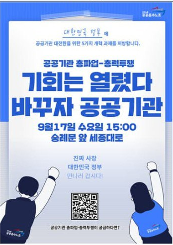

9월 17일, 우리의 운명을 바꾸는 날!
총력투쟁의 선봉에 함께 섭시다! 우리의 권리는 투쟁 없이 주어지지 않습니다.

총력투쟁의 선봉에 함께 섭시다! 우리의 권리는 투쟁 없이 주어지지 않습니다.
근골격계 위험요인조사, 제대로 알고 우리의 건강권을 쟁취합시다.
4.3 평화기행과 함께 조합원들의 목소리를 담는 '조합원 칼럼'이 신설되었습니다.
반복되는 안전사고, 구조적 문제 해결을 위해 지부는 단호히 경고하고 투쟁합니다.
"기회는 열렸다, 바꾸자 공공기관!" 이 구호가 대한민국 심장부, 서울 세종대로에 울려 퍼질 날이 얼마 남지 않았습니다. 오는 9월 17일 수요일 오후 3시(집결 2시 30분), 우리는 숭례문 앞에 모여 불의한 정권의 폭주를 멈추고 노동의 가치가 존중받는 세상을 향한 총력투쟁에 돌입합니다.
이번 9.17 공공기관 총파업-총력투쟁은 단순히 하나의 임금 협상이 아닙니다. 이는 ▲살인적인 총인건비제 전면 개선 ▲노동기본권 보장을 위한 노정교섭 법제화 ▲인력 확충으로 안전한 일터 쟁취 ▲직무성과급제 저지와 반노동 혁신가이드라인 폐기 ▲비정규직 차별 철폐 등 우리의 생존과 미래가 걸린 핵심 요구를 내건 역사적인 투쟁입니다.
철도노조는 이번 총력투쟁에 2천 조합원 참가를 목표로 하고 있습니다. 각 지부 대의원, 간부, 그리고 뜻을 함께하는 모든 조합원 동지들이 투쟁의 주역입니다. 행진 필참 조합원들은 지역 열차 예매 시 17시 이후 열차를 이용해주시기 바랍니다. 동지 여러분! 더 이상 물러설 곳이 없습니다. 우리의 권리는 투쟁 없이 주어지지 않습니다. 9월 17일, 우리의 단결된 힘으로 세상을 바꾸는 그 역사적인 현장에서 모두 함께합시다!
3년마다 돌아오는 '근골격계 질환 유해요인조사' 시즌이 다가왔습니다. 사측의 의뢰를 받은 외부 기관에서 우리 작업장의 위험도를 평가하는 중요한 조사이지만, 많은 조합원들이 그 형식적인 과정에 분통을 터뜨렸던 기억이 생생할 것입니다. 이번 조사는 단순히 서류 작업을 위한 행사가 되어서는 안 됩니다. 우리의 몸과 건강, 그리고 정당한 산재 권리가 걸린 중대한 문제입니다.
현재의 유해요인조사는 심각한 한계를 가지고 있습니다. 객관적인 수치로 측정하는 작업환경측정과 달리, 조사자의 주관적인 관찰에 크게 의존합니다. 사측에 고용된 조사기관은 가장 쉽고 편한 작업 한두 장면만 사진으로 찍어 '부담 위험 낮음'으로 결론 내리기 일쑤입니다. 전신을 사용하고 수시로 자세를 바꿔야 하는 우리의 복잡한 업무를 제대로 평가할 리 만무합니다.
철도 현장은 업무 강도에 비해 근골격계 산재 신청 건수가 현저히 낮습니다. 이는 결코 우리 작업장이 안전해서가 아닙니다. 많은 동지들이 '어쩔 수 없는 일'이라 여기며 묵묵히 고통을 참고 있기 때문입니다. 하지만 오늘의 침묵과 인내는 미래의 '골병'으로 돌아올 뿐입니다. 정작 몸이 망가져 산재를 신청해야 할 때, 형식적으로 낮게 평가된 내 업무의 위험도는 우리의 발목을 잡는 족쇄가 될 것입니다.
따라서 이번 조사에서는 피측정자인 우리, 작업 당사자의 적극적인 증언이 무엇보다 중요합니다. 조사자가 현장을 방문했을 때, 평소 불편했던 작업 자세, 무리한 힘이 들어가는 동작, 반복적인 업무로 인한 통증 부위 등을 구체적으로 설명하고 개선을 요구해야 합니다. 만약 이 과정에서 조금이라도 어려움을 느끼거나 도움이 필요하다면, 주저하지 말고 노동조합에 협조를 요청하십시오. 조합은 동지들이 자신의 업무에 존재하는 근골격계 위험요인을 당당히 피력하고, 우리의 작업 환경을 안전하게 바꿔나가는 모든 과정에 함께할 것입니다. 우리의 건강은 우리가 지켜야 합니다.
서지본은 투쟁뿐만 아니라, 조합원들의 삶과 생각을 풍성하게 만드는 다양한 활동을 펼치고 있습니다. 최근 서지본은 '세상을 날카롭게 보는 아카데미' 마지막 일정으로 '제주 4.3 평화기행'을 진행했습니다. 참가자들은 제주 곳곳에 남은 4.3의 비극적 역사를 배우고 희생자들을 추모하며, 노동운동의 가치와 연대의 의미를 되새기는 소중한 교육의 장을 가졌습니다.
이와 더불어, 서지본 소식지는 조합원 누구나 참여할 수 있는 열린 지면, '조합원 칼럼' 코너를 신설했습니다. 현장의 생생한 이야기, 일상 속 느낌, 취미와 여행 등 형식과 주제에 제한 없이 조합원들의 목소리를 더 가까이, 더 다양하게 담기 위함입니다. 좋은 글은 소식지에 게재되며, 선정된 필자에게는 커피 쿠폰도 드립니다. 분당차량지부 정선엽 동지의 '4.3, 이젠 잊혀져도 될 역사인가?' 칼럼처럼, 여러분의 생각과 경험, 감동을 함께 나누어 주십시오. 원고 접수 및 문의는 카카오채널 '철도노조서지본'으로 해주시기 바랍니다.
최근 반복적으로 발생하고 있는 철도 안전사고는 단순한 기술적 문제를 넘어 철도공사의 안전불감증과 무책임한 경영에 기인한 구조적 문제입니다. 노동자들의 목소리를 외면하고, 안전 투자보다 수익 추구에 치중하는 경영은 결국 근로자의 생명과 국민의 안전을 위협하는 중대한 문제로 이어지고 있습니다.
우리 고양고속지부는 이러한 문제에 대해 단호히 경고하며, 철도공사가 진정으로 책임 있는 경영을 하기 위해서는 다음과 같은 요구사항을 제시합니다. 첫째, 안전관리 시스템의 근본적인 재정비와 전문 인력의 확충. 둘째, 현장 근로자의 안전 의견을 반영하는 제도적 장치 마련. 셋째, 안전사고 발생 시 즉각적이고 투명한 조사와 재발 방지 대책 수립. 안전은 철도운송의 최우선 가치이며, 이를 지키기 위한 노력은 어떤 비용보다 우선되어야 합니다. 우리는 모든 철도 노동자와 이용객의 생명과 안전을 지키기 위해 끝까지 투쟁할 것입니다.